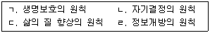

시험결과
확인
사회복지사-1급(2교시) (2016-01-23 기출문제)
1과목: 사회복지 실천론
1. 로웬버그와 돌고프(Lowenberg & Dolgoff)가 제시한 윤리적 의사결정의 우선순위를 순서대로 바르게 나열한 것은?

- ㄱ→ㄴ→ㄷ→ㄹ
- ㄱ→ㄷ→ㄹ→ㄴ
- ㄴ→ㄱ→ㄹ→ㄷ
- ㄷ→ㄴ→ㄱ→ㄹ
- ㄹ→ㄱ→ㄷ→ㄴ
(정답률: 76%)

- ㄱ: 인간의 존엄성과 권리를 존중하고 보호하는 것이 가장 우선적이다.
- ㄴ: 공정한 절차와 규칙을 준수하는 것이 중요하다.
- ㄷ: 가장 많은 이익을 가져다 줄 결정을 하는 것이 바람직하다.
- ㄹ: 결정의 결과로 발생할 수 있는 부정적인 영향을 최소화하는 것이 필요하다.
이 순서대로 나열한 이유는, 인간의 존엄성과 권리를 존중하는 것이 가장 기본적인 윤리적 가치이며, 이를 보호하기 위해서는 공정한 절차와 규칙을 준수해야 한다는 것이다. 그리고 결정을 할 때에는 가장 많은 이익을 가져다 줄 수 있는 결정을 하는 것이 바람직하며, 이때에는 부정적인 영향을 최소화하는 것이 필요하다는 것이다. 따라서 "ㄱ→ㄴ→ㄷ→ㄹ"이 가장 적절한 순서이다.